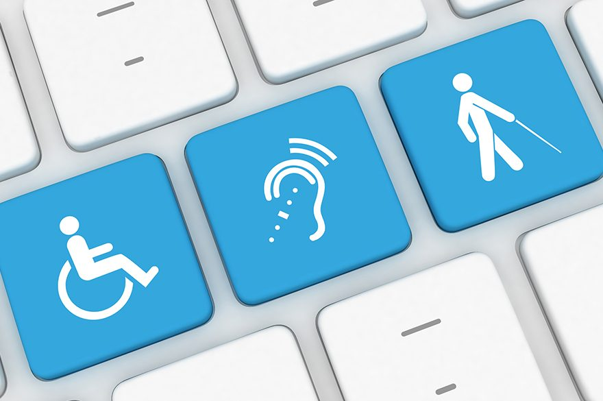

Por que tão difícil?
Iniciamos o século já com a premissa de que viveríamos a era da tecnologia, hoje 2021 temos ainda mais certeza disso, uma vez que tudo hoje gira em torno da tecnologia.
Mas por que ainda existem tão poucas formas de acessibilidade no mundo
digital? Certamente a falta de interesse, e investimentos são algumas das respostas mais óbvias.
Qual a importância da acessibilidade digital?
Essa situação pode ser vista de diversas formas, sejam elas sentimentais ou
financeiras, por exemplo.
Partindo da emoção humana mais básica, amor ao próximo, passamos horas nos deleitando de diversas formas, e totalmente imersos no entretenimento que o mundo digital pode proporcionar, por que
eles não podem?
Partindo do ponto de vista financeiro no Brasil, por exemplo, existem mais de
10 milhões de deficientes auditivos, cerca de 80% são analfabetos nas línguas escritas.
Falamos de
5% da população nacional que não têm acesso a qualquer tipo de site. Se incluirmos deficientes visuais que não possuem um leitor de tela no computador, ou pessoas com dislexia severa, pelo menos 45 milhões de brasileiros têm algum tipo de deficiência. Isso representa quase 25% da
população, segundo o último levantamento feito pelo Instituto Brasileiro de Geografia e Estatística (IBGE). Não apostar na acessibilidade digital, é obviamente aceitar perder dinheiro, e aceitar que sua marca terá uma capilaridade
reduzida.
Por que pouco avanço na área?
Antes de pensarmos em quebrar essa barreira da acessibilidade, precisamos quebrar a da mentalidade. Durante o desenvolvimento de qualquer projeto que seja pouco se fala sobre acessibilidade digital -como um deficiente visual poderia consumir o conteúdo? Como faremos para pessoas com baixa cognição conseguirem entender o que está sendo proposto? Na verdade, o impeditivo para esse tipo de questionamento, e tentativa de implementação vem justamente da falta de investimentos, e isso nos leva a outra pergunta.
Por que investir em acessibilidade digital?
Em 2019, 69% dos participantes da pesquisa inglesa Click-Away Pound disseram abandonar sites devido à essas “barreiras digitais”. Além disso 86% disseram que estariam dispostos a gastar mais em lojas virtuais se elas tivessem acessibilidade.
A essa altura você deve estar se perguntando...
O que fazer para tornar seus conteúdos acessíveis?
Na lista abaixo seguem algumas dicas de como tornar seu site mais receptivo para deficientes.
- Entenda o que são tecnologias assistivas;
Na prática, dependendo do tipo de limitação que possuem, as pessoas utilizam tecnologias assistivas variadas para executarem tarefas. Elas vão das mais simples às mais complexas em seu dia a dia, inclusive no mundo digital.
- Crie conteúdo
multiplataforma e multissensorial;
Quanto mais sentidos, mais acessível. Para criarmos conteúdos cada vez mais inclusivos, precisamos considerar que as pessoas acessam as informações por diferentes canais sensoriais
- Use
legendas em
seus vídeos;
Como já dito no começo da matéria no Brasil existem mais de 10 milhõs de deficientes auditivos, legendar seus vídeos permite que eles possam consumir essa mídia, além de fazê-los se sentir bem vindos.
- Inclua descrições das imagens;
Para que as pessoas cegas e com baixa visão consigam acessar as informações na web, elas utilizam os leitores de tela. É uma tecnologia assistiva que converte texto em discurso sintetizado.